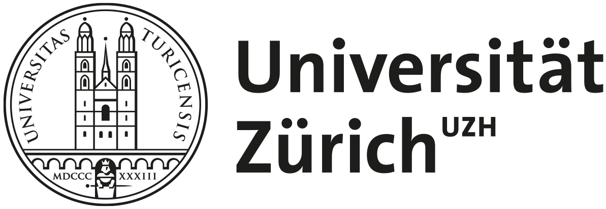
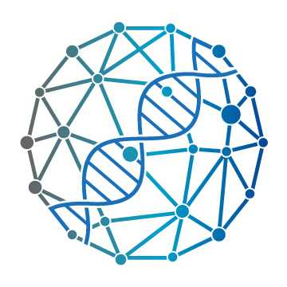
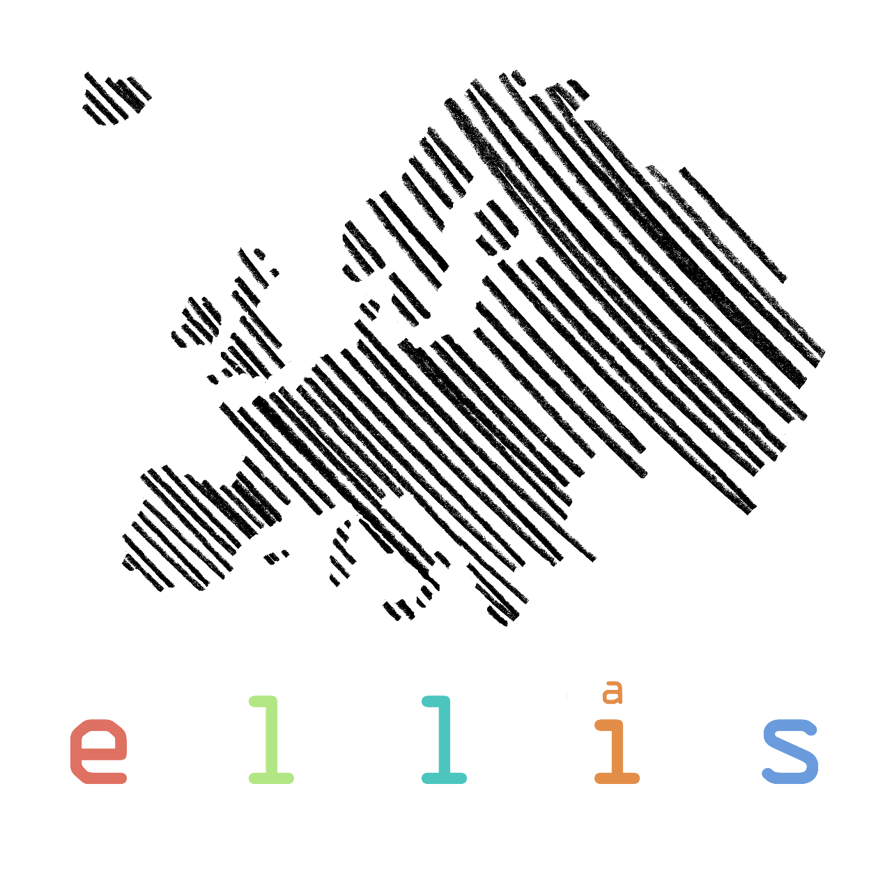

Bowen Fan
ML Researcher / Engineer for Multimodal Biomedical AI
I build multimodal machine learning systems that turn clinical, imaging, and molecular data into robust predictions and decision support for precision medicine. At the Krauthammer Lab (University of Zurich), I co-lead multi-institution programs in oncology and transplant medicine, combining model development, validation, stakeholder alignment, and deployment planning.
40k+
oncology patients in current research programs
EHR + imaging + omics
multimodal data across clinical prediction settings
Bench to workflow
from retrospective modeling to clinician-facing evaluation
What I work on
I focus on translational ML problems where strong modeling needs to be paired with real-world data quality, interpretability, and collaboration across clinical and product stakeholders.
Multimodal Clinical ML
Building risk and treatment-response models from EHR, imaging, and omics data with an emphasis on robustness, interpretability, and clinical utility.
LLM Systems for Oncology
Designing agentic pipelines that structure medical guidelines, extract patient context, and orchestrate predictive models for tumor board decision support.
Translational AI Delivery
Working across clinicians, data scientists, and research partners to move models from retrospective analysis toward deployable decision-support tools.
Biomedical AI
Multimodal ML
Clinical Prediction
Treatment Response
EHR
Omics
LLM Agents
Precision Oncology
Biotech / Pharma
Background
2024 – present
Postdoc — Krauthammer Lab, University of Zurich
2020 – 2024
PhD in Machine Learning — ETH Zurich
ELLIS doctoral student | MLFPM Marie Curie fellow | Advisor: Prof. Karsten Borgwardt
2017 – 2019
MSc in Biomedical Engineering — University of Tokyo
Dean's Choice Award for Best Thesis
2013 – 2017
BSc in Engineering Physics — Tsinghua University


